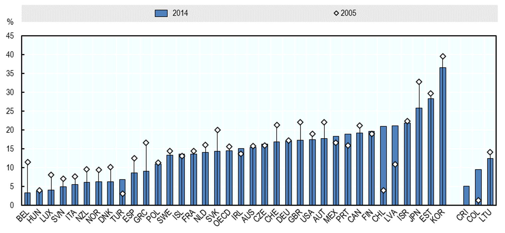

Example OECD chart
A good way to familiarise yourself with R is by recreating charts that you may otherwise make in Excel. In the spirit of gender month at the OECD, I have chosen a chart on the gender wage gap in OECD countries. The following chart is from the OECD Employment Outlook 2018.
Gender disparities in full-time earnings remain considerable
Gender gap in earnings of full-time employees (15 years and over), 2005 and 2014 
We will recreate this chart but with more up-to-date data. The data can be donwloaded from OECD Statistics. Instead of the years 2005 and 2014, we will use the years 2009 and 2018.
Before we get started
There are a few concepts that are usefull to understand before we start making the chart...
First we
library (readr)
library(ggplot2)
I have saved the data file to my Github. You can download it here.
data <- readr::read_csv("https://raw.githubusercontent.com/JolienNoels/joliennoels/main/content/post/2021-03-26-recreating-oecd-chart/data.csv")
Let's take a quick look at the data.
head(data)
## # A tibble: 6 x 4
## country iso3 `2005` `2014`
## <chr> <chr> <dbl> <dbl>
## 1 Belgium BEL 11.5 3.30
## 2 Hungary HUN 4.02 3.77
## 3 Luxembourg LUX 8.20 4.14
## 4 Slovenia SVN 7.13 5.00
## 5 Italy ITA 7.69 5.56
## 6 New Zealand NZL 9.61 6.08
Making a basic chart
Let's start with a basic scatter plot.
ggplot(data = data, aes(x = iso3, y = `2005`)) +
geom_point()

Now let's try a simple bar chart.
ggplot(data = data, aes(x = iso3, y = `2014`)) +
geom_bar(stat = "unique")

Since the the scatter and bar plot have the same values on the x- and y-axis, we can combine both into one plot.
ggplot(data = data, aes(x = iso3) ) +
geom_bar(aes(y = `2014`), stat = "unique") +
geom_point(aes(y = `2005`))

Improving the
We have made a basic chart, but it is not yet easy to read. A first step we can do is reordering the bars and changing the titles of the axises.
ggplot(data, aes(x = reorder(iso3, `2014`, ascend = TRUE))) +
geom_bar(aes(y = `2014`), stat = "unique") +
geom_point(aes(y = `2005` )) +
labs(x = "",
y = "%")

We can change the dots to other shapes. Our options are a follows:
ggplot(data, aes(x = reorder(iso3, `2014`, ascend = TRUE))) +
geom_bar(aes(y = `2014`), stat = "unique") +
geom_point(aes(y = `2005`), shape = 23, size = 2, fill = "white") +
labs(x = "",
y = "%")

Making the chart look nice
ggplot(data, aes(x = reorder(iso3, `2014`, ascend = TRUE))) +
geom_bar(aes(y = `2014`, fill = "#3F6CB0"), stat = "unique", colour = "black") +
geom_point(aes(y = `2005`, color = "#96A9DC"), shape = 23, size = 2, fill = "white") +
labs(x = "",
y = "%",
title = "Gender disparities in full-time earnings remain considerable",
subtitle = "Gender gap in earnings of full-time employees (15 years and over), 2005 and 2014") +
scale_y_continuous(limits=c(0,45), expand=c(0,0)) +
scale_fill_manual(name = "",
labels = c('2014'),
values = c("#3F6CB0")) +
scale_color_manual(name = "",
labels = ("2005"),
values = "black") +
guides(color = guide_legend(order = 2, reverse=TRUE),
fill = guide_legend(order = 1, reverse=TRUE)) +
theme(legend.position = "top",
axis.text.x = element_text(size=10, colour = "black", angle = 45, hjust = 1),
axis.text.y = element_text(size=12, colour = "black", angle = 90),
axis.title.y = element_text(hjust = 1,size=12),
axis.line = element_line(colour = "black"),
axis.ticks.x = element_blank(),
legend.text = element_text(size=12),
legend.key = element_rect(color = "#E6E6E6", fill = "#E6E6E6"),
legend.background = element_rect(fill="#E6E6E6"),
legend.box.background = element_rect(color = "#E6E6E6",fill = "#E6E6E6"),
legend.box.margin = margin(0,0,0,0,"cm"))

That is the final chart. If you'd like to learn more about make graphs in R, the R for data science book is a great resource.